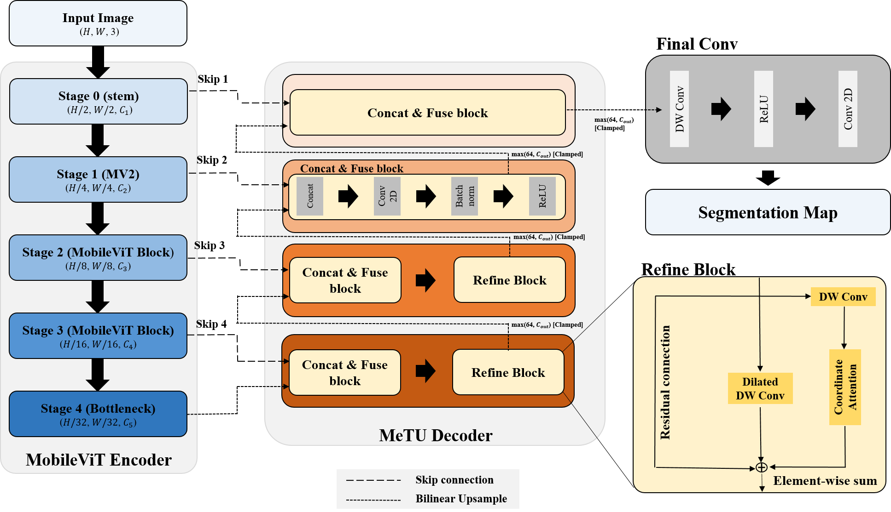
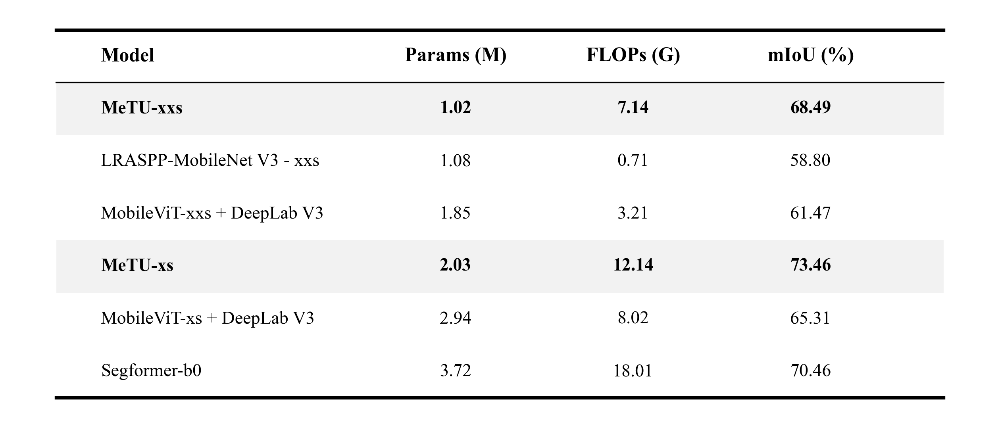
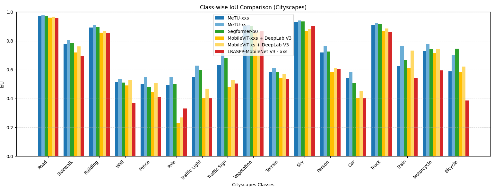
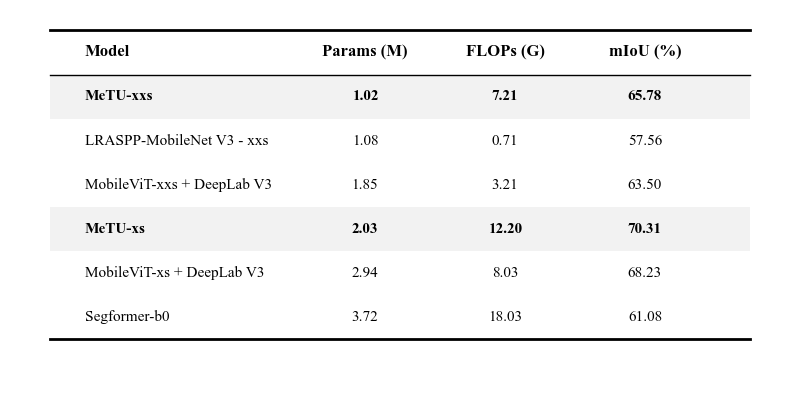
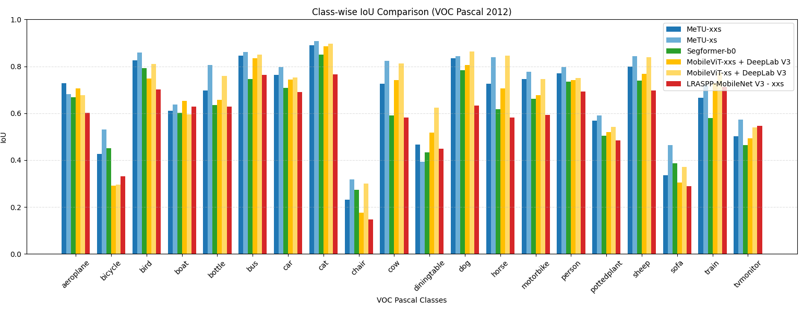
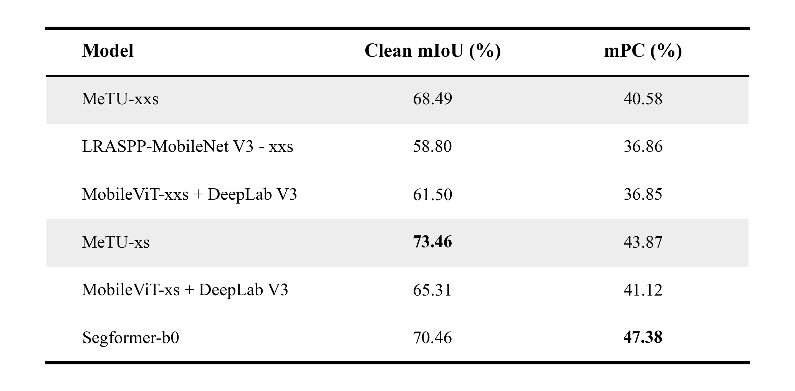
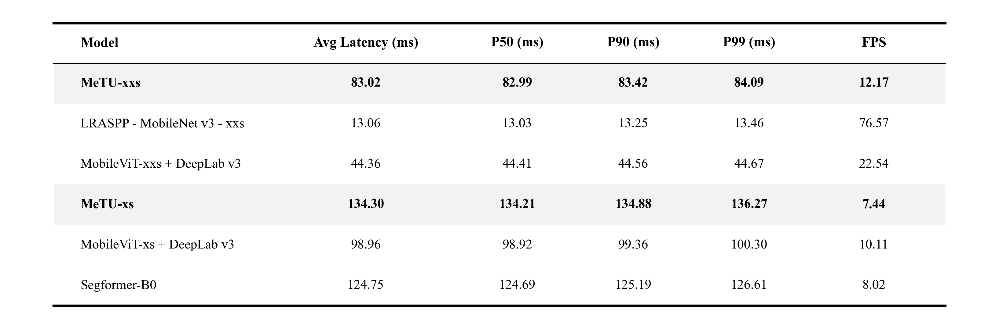

Evaluated on 19 classes at 512x1024 resolution. MeTU-xs achieves 73.46% mIoU, proving superior on detailed objects like poles (+5.0%p) compared to Segformer-b0.
While Vision Transformers (ViT) have redefined semantic representation, deploying them on edge hardware remains a significant challenge due to computational overhead. Hybrid models like MobileViT effectively merge CNNs' inductive bias with Transformers' global context, yet their application in segmentation tasks often struggles with boundary precision and environmental robustness.
MeTU is proposed to address these limitations. By rethinking the decoder structure and attention mechanisms, we aim to provide a high-precision segmentation model that maintains deterministic performance and robustness under real-world adverse conditions, all while adhering to the strict resource constraints of ARM-based edge CPUs.

Inspired by the TransUNet framework, MeTU utilizes a MobileViT backbone paired with a specialized U-Net style decoder. Key technical optimizations include:
Evaluated on 19 classes at 512x1024 resolution. MeTU-xs achieves 73.46% mIoU, proving superior on detailed objects like poles (+5.0%p) compared to Segformer-b0.


Tested on 20 foreground classes at 512x512 resolution. MeTU-xs leverages hybrid biases to reach 70.31% mIoU, outperforming lightweight baselines by over 9%p.



We evaluated robustness using Cityscapes-C (16 corruption types across 5 severity levels). MeTU-xs maintains a stable 43.87% mPC, demonstrating reliable performance against environmental noise.
Benchmark: Raspberry Pi 4B (4GB) | ONNX FP32 | 200 Sample Images

MeTU-xxs delivers 12.17 FPS with a central latency of 83.02ms. More importantly, the P50-P99 gap is kept under 1.1ms, ensuring the high determinism required for real-time industrial control.
Analysis: Our profiling indicates a memory-bandwidth bottleneck on ARM CPUs; despite lower FLOPs, the high-resolution skip connections increase memory access overhead compared to compute-heavy dense layers.
MeTU demonstrates that architectural efficiency on edge devices is not merely a function of parameter count, but a complex interaction between Inductive Bias, Global Representation, and Hardware Memory Bandwidth.
For more details on the training logs, ablation studies (including Coordinate Attention comparisons), and pre-trained ONNX models, please visit the repository.